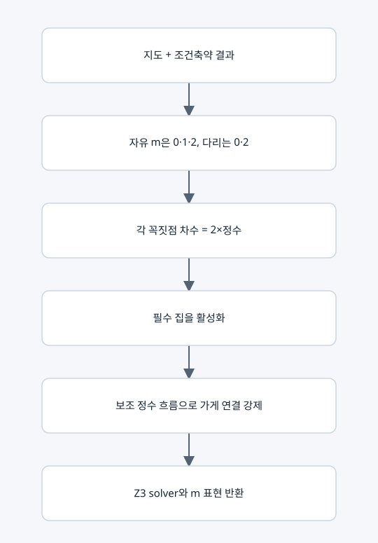

실제 귀환 배달 경로의 공동 제약

목적
특성다항식에 나타나는 m이 실제 배달 귀환 경로를 뜻하도록 제한한다. 경로를 먼저 나열하는 함수가 아니다.
주요 벡터·조건
• 자유 m_e는 정수이고 0≤m_e≤2. 고정값은 정수 상수다.
• 각 i에서 Σ_(e incident i)m_e=2h_i, h_i는 범위가 있는 정수.
• 가게는 항상 활성. 나머지는 인접 m 중 하나 이상이 양수일 때 활성이다. 모든 집은 활성이어야 한다.
• 방향을 임의로 붙인 도로마다 보조 흐름 f_e를 둔다. −(n−1)≤f_e≤n−1, m_e=0이면 f_e=0.
• 가게 외 활성 정점의 유입−유출은 1, 비활성 정점은 0. 가게는 나머지 활성 정점 수만큼 공급한다.
행렬 해석과 주의
흐름 식은 접속행렬을 이용한 정수 보존식으로 해석할 수 있지만 코드는 희소 목록으로 구성한다. f_e는 연결성 증명용 보조 변수이며 실제 LC 전류, 방문 순서, 도로 이용 횟수가 아니다. 동일한 m에 여러 흐름 증인이 있어도 스펙트럼 단위 차단을 사용하므로 출력이 중복되지 않는다.
복사 코드와 함수 목록
원본 그대로의 route_constraints.py
build_route_constraints
표시된 함수 중 예제 생성·교대 투사·수치 행렬은 위 설명의 호출 범위에 따라 보조 기능일 수 있다.